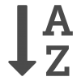
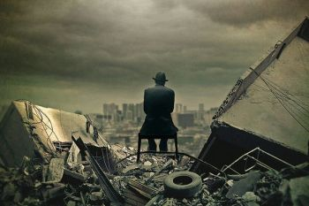
Постапокалиптика — жанр научной фантастики и фильмов-катастроф, в котором действие развивается в мире, пережившем глобальную катастрофу. Постапокалиптическим называют также творческий стиль, несущий настроение пустынности, одиночества и ужаса в образах постаревшей и покинутой техники или зданий.
Получил широкую популярность после Второй мировой войны в связи с опасениями по поводу использования ядерного оружия, однако подобные произведения начали писать ещё в 19 веке, например «Последний человек» М. Шелли.
Основная идея:
Основным характеристическим признаком постапокалиптики является развитие сюжета в мире (или ограниченной его части) с особенной историей. В прошлом этого мира цивилизация достигла высокого уровня социального и технического развития, но затем мир пережил некую глобальную катастрофу, в результате которой цивилизация и большинство созданных ею богатств были уничтожены. В качестве катастрофы, уничтожившей мир, чаще всего фигурируют: Третья мировая война с применением оружия массового поражения (ядерного, химического или биологического), вторжение инопланетян, восстание машин под предводительством искусственного разума (роботов), пандемия, падение астероида, массовое появление доисторических чудовищ, климатическая или иные катастрофы.
Типичный постапокалиптический сюжет начинает развиваться, как правило, спустя значительное время после катастрофы, когда её «поражающие факторы» сами по себе уже перестали действовать. В том или ином виде до читателя (зрителя) обычно доводится в сжатом виде история общества с момента катастрофы: непосредственно за ней следует период дикости, затем выжившие концентрируются вокруг сохранившихся источников жизнеобеспечения, стихийно образуются те или иные новые социальные структуры. К моменту начала сюжета этот процесс уже обычно завершён, на пригодной для жизни территории создался определённый конгломерат сообществ, сложилось более или менее устойчивое равновесие сил.
Типичные детали:
Обычными для постапокалиптики являются:
• Сельские общины или феодальные хозяйства, производящие продукты питания.
• Городские поселения — центры торговли, ремёсел, обычно достаточно криминогенные, но живущие по определённым законам и имеющие силы поддержания порядка.
• Банды — чисто криминальные сообщества под предводительством сильного лидера, базирующиеся на сохранившихся технологических объектах, предоставляющих минимум, необходимый для выживания (развалины заводов, выброшенные на берег или находящиеся на плаву гигантские корабли и т. п.), и живущие за счёт грабежа на торговых путях, налётов на оседлые поселения и нелегальной торговли.
• Дикие племена, обитающие обычно в пустынях, горах, другой труднодоступной местности и состоящие из одичавших либо мутировавших людей.
• Более или менее изолированные высокотехнологичные компактные сообщества, образовавшиеся на базе крупных военных баз, научных городков, орбитальных станций или созданных специально в преддверии катастрофы убежищ. Обычно описываются как относительно цивилизованные (в отличие от большинства других общественных образований, они не восстанавливали общественную организацию, а сохранили и модифицировали то, что было до катастрофы), но при этом тоталитарные, управляемые радикальными военными или учёными. В их руках находятся наиболее опасные технологии, сохранённые с докатастрофических времён. Как правило, такие сообщества по возможности поддерживают изоляцию от окружающего мира. Иногда они достаточно сильны, чтобы не только противостоять возможной агрессии, но и проводить в отношении ближайших соседей политику с позиции силы.
• Крупные города или даже более значительные территориальные образования, в силу тех или иных причин не затронутые или мало затронутые катастрофой и сохранившие «старый» уклад жизни, постепенно изменяющийся под воздействием внешних факторов.
В описании места действия, как правило, присутствуют:
• Обширные пустыни на месте ранее заселённых территорий.
• Заброшенные, частично разрушенные города, предприятия, военные объекты.
• Территории, ранее находившиеся на суше, но в результате катастрофы затопленные морем. Здания и техногенные объекты на морском дне.
• Мутировавшие люди, животные, растения, целые леса-мутанты.
• Многочисленные артефакты погибшей цивилизации, частью опасные, частью полезные, но обычно просто служащие фоном для повествования.
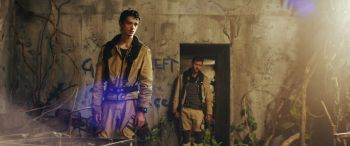
2067 is a 2020 Australian science fiction mystery thriller film directed by Seth Larney and starring Kodi Smit-McPhee and Ryan Kwanten.
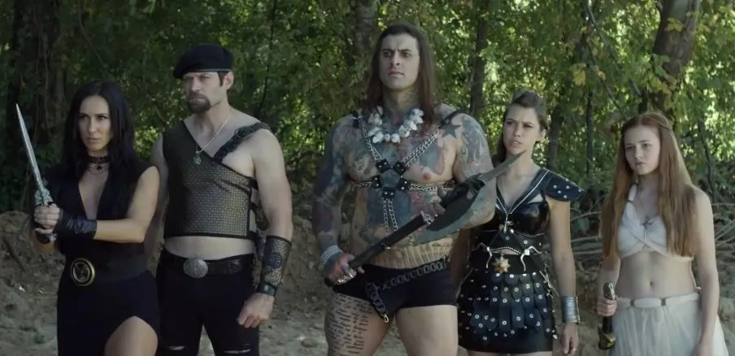
AKA:
Movie: Apocalypse Rising
Storyline: They came from a doomed world to save us from the same fate.
Genres: Adventure, Comedy, Fantasy
Actor: Hunter Alexes Parker, Shane Samples, Justin Lebrun
Director: Richard Lowry
Country: USA
Duration: 83 min
Release: 12 June 2018 (USA)
Movie: Ashes
Storyline: An obsessive doctor working on a cure for AIDS unwittingly creates an aggressive new bacteria that deteriorates the body and enrages the mind.
Genres: Horror, Sci-Fi, Thriller
Actor: Enrique Almeida, Joel Bryant, Chris Trouble Delfosse
Director: Elias Matar
Duration: 95 min
Release: 9 September 2010
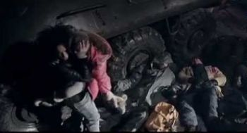
Movie: Code Red
Storyline: A Special Forces soldier is sent into Bulgaria when a chemical agent from WWII is uncovered that can reanimate the dead.
Genres: Action, Horror, Sci-Fi
Actor: Julian Kostov, Paul Logan, Manal El-Feitury
Director: Valeri Milev
Duration: 91 min
Release: 13 February 2014 (Kuwait)
«Заражение» (англ. Contagion) — фильм-катастрофа режиссёра Стивена Содерберга с участием Мэтта Деймона, Джуда Лоу, Гвинет Пэлтроу, Кейт Уинслет, Лоуренса Фишборна, Марион Котийяр.
Картина была впервые показана 3 сентября 2011 года на Венецианском кинофестивале. На экраны кинотеатров США фильм вышел 9 сентября, собрав 22 млн доллара в первый уик-энд. Суммарные сборы от проката по всему миру составили 135 млн долларов. Премьера в России состоялась 13 октября 2011 года.
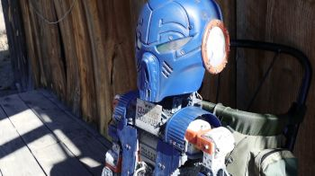
Movie: The Directive
Storyline: One Year after a Virus kills most of humanity, a lone Survivor meets a broken Robot that helps him embark on a journey to find Safe Zone 57.
Genres: Action, Adventure, Sci-Fi
Actor: Kyle Abraham, Scott Thompson, Blaiden D. Cordle
Director: Alexander Raye Pimentel
Duration: 113 min
Release: 15 March 2019 (USA)
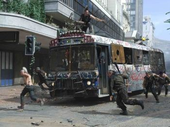
«Судный день» (англ. Doomsday) — фантастический постапокалиптический боевик с элементами триллера 2008 года, снятый режиссёром Нилом Маршаллом. Согласно фильму, весной 2008 года Шотландию охватила пандемия таинственного смертоносного и неизлечимого вируса, известного как «Жнец» (англ. Reaper) его главные симптомы: язвы, рвота и высокая температура, после чего весь этот регион страны был изолирован, а его обречённые жители брошены на произвол судьбы. Тем не менее, в 2035 году, когда происходит действие фильма, «Жнец» снова появился — на сей раз в обильно заселённом Лондоне. Правительство Великобритании посылает отряд спецназа под командованием майора Иден Синклер (Рона Митра) в якобы вымершую Шотландию, где британский разведывательный спутник засёк признаки присутствия людей, свидетельствующие о том, что внутри карантинной зоны была найдена вакцина против вируса. Внутри карантинной зоны майор Синклер и её спутники сталкиваются с двумя агрессивными группами выживших — мародёрами-каннибалами, напоминающими одновременно панков и племена дикарей, и консерваторными мракобесами, напоминающими средневековых рыцарей.
Концепция фильма изначально была основана на идее режиссёра и сценариста фильма Нила Маршалла столкнуть современных солдат со средневековыми рыцарями. Фильм содержит огромную массу киноцитат и отсылок к классическим фантастическим фильмам, в частности, «Побег из Нью-Йорка», «Безумный Макс» и другим.
Маршалл собрал для этого фильма втрое больший бюджет, чем вместе взятые бюджеты его предыдущих фильмов — «Псы-воины» (2002) и «Спуск» (2005). Съёмки велись в Шотландии (в том числе в известном замке Блэкнесс) и Южной Африке, которая и сыграла роль постапокалиптической Шотландии. В США и Канаде премьера фильма состоялась 14 марта 2008 года, в Великобритании и России — 9 мая и 27 марта того же года соответственно. Фильм получил смешанные, но в основном отрицательные оценки критики и собрал в прокате весьма умеренную сумму, едва окупив затраты на собственное производство.
«Конец света» (исп. Fin) — испанский фильм 2012 года режиссёра Хорхе Торрегроссы, основанный на романе Давида Монтеагудо «Конец». Премьера состоялась на 37-м Международном кинофестивале в Торонто. В России был показан впервые 21 декабря 2012 года.
Слоган: «Никого не останется».
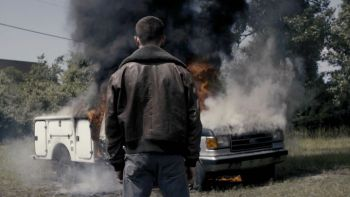
Movie: Exodus
Storyline: When a VHS-tape proves the existence of a rumored doorway to paradise, a young man abandons his decaying hometown in pursuit of the door to salvation, evading vengeful pursuers along the way.
Genres: Sci-Fi
Actor: Jimi Stanton, Janelle Snow, Charles Andrew Gardner
Director: Logan Stone
Duration: 75 min
Release: 1 April 2021 (Russia)
Movie: Fallout: Red Star
Storyline: Set in the Fallout game universe, this fan film follows the ranger on a mission to find a person of interest.
Genres: Action, Drama, Sci-Fi
Actor: Cameron Diskin, Catherine Carlen, Toni Wynne
Director: Vincent Talenti
Duration: 29 min
Release: 28 June 2013 (USA)
Phase 7 (Spanish: Fase 7) is a 2010 Argentine science fiction black comedy film written and directed by Nicolas Goldbart and starring Daniel Hendler, Yayo Guridi, Jazmín Stuart and Federico Luppi.
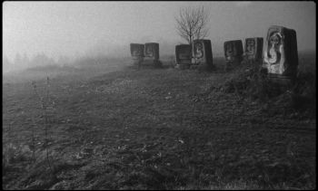
Movie: Last and First Men
Storyline: Two billion years ahead of us, a future race of humans finds itself on the verge of extinction. Almost all that is left in the world are lone and surreal monuments, beaming their message into the wilderness.
Genres: Fantasy, Mystery, Sci-Fi
Actor: Tilda Swinton
Director: Jóhann Jóhannsson
Country: Iceland
Duration: 70 min
Release: 21 September 2020 (UK)
«Хроники хищных городов» (англ. Mortal Engines, с англ. — «Смертельные механизмы (машины)») — новозеландско-американский научно-фантастический приключенческий фильм режиссёра Кристиана Риверса, снятый по мотивам одноимённого романа Филипа Рива. Главные роли исполнили Роберт Шиэн и Гера Хилмарсдоттир. Премьера фильма в кинотеатрах США состоялась 14 декабря 2018 года, а России 6 декабря.
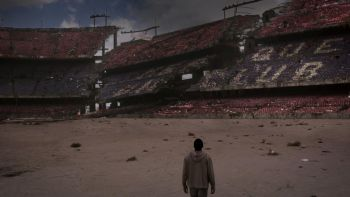
Second Origin is a 2015 Spanish film directed by Carles Porta, after an idea of Bigas Luna, co-produced by Produccions Audiovisuals Antàrtida and Ipso Facto Films. It is an adaptation by Bigas Luna, Carles Porta and Carmen Chaves of the well-known novel Mecanoscrit del segon origen by the Catalan writer Manuel de Pedrolo.
«Сквозь снег» (англ. Snowpiercer) — постапокалиптический триллер южнокорейского режиссёра Пона Чжун Хо, основанный на французском графическом романе «Le Transperceneige» Жака Лоба и Жан-Марка Рошетта. Премьера в Южной Корее состоялась 1 августа 2013 года. Подавляющим большинством представителей кинопрессы признан одним из 10 лучших фильмов 2014 года (в котором вышел в широкий прокат), удостоен множества наград — в основном, за декорации и актёрскую работу Тильды Суинтон (трусливая начальница Мейсон).
Съёмки:
Съёмки фильма проходили на Barrandov Studios в Праге. Все сцены с видами городов, как и сам белый медведь в конце фильма, были созданы на компьютере.
Награды:
• 2013 — премия «Голубой дракон» за лучшую режиссуру (Пон Чжун Хо), а также номинации за лучший фильм и лучшее техническое достижение.
• 2013 — премия «Большой колокол» за лучший монтаж, а также номинации за лучшую режиссуру (Пон Чжун Хо) и лучшую женскую роль второго плана (Ко А Сон).
• 2013 — приз за лучшую работу художника (Онджей Неквасил) на Азиатско-тихоокеанском кинофестивале, а также 6 номинаций: лучший режиссёр (Пон Чжун Хо), актёр второго плана (Сон Кан Хо), актриса второго плана (Тильда Суинтон), операторская работа, монтаж, звук.
• 2014 — 5 номинаций на премию Asian Film Awards: лучший фильм, режиссёр (Пон Чжун Хо), сценарий режиссёр (Пон Чжун Хо, Келли Мастерсон), работа художника (Онджей Неквасил), костюмы (Кэтрин Джордж).
• 2014 — участие в конкурсной программе Сиднейского кинофестиваля.
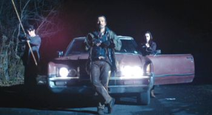
«Земля Вампиров» (англ. Stake Land) — американский постапокалиптический фильм режиссёра Джима Микла, вышедший в 2010 году. Низкобюждетная драма, совмещающая в себе также жанры, как зомби-хоррор и роуд-муви, была высоко оценена кинокритикой. В главной роли выступил Ник Дамичи, игравший и в предыдущих картинах Микла. Как и в фильме «Малберри-стрит», Дамичи был основным автором сценария.
Снятый за бюджет около 625-650 тысяч долларов фильм удостоился наград на фестивалях кино в Монреале, Торонто и Амстердаме и открыл режиссёру дорогу к признанию.
В России премьера состоялась 15 сентября 2011 года.
Интересные факты:
• На блок посту куда приезжают герои одна из улиц называется улица Вязов (ELM st.).
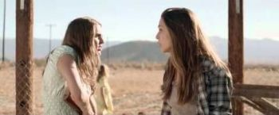
Movie: The Tribe
Storyline: A family of three young sisters live out their days after a pandemic has consumed most of the known world. One day a stranger suddenly shows up and their world changes in ways they never could have imagined.
Genres: Drama, Sci-Fi, Thriller
Actor: Anne Winters, Jessica Rothe, Michael Nardelli
Director: Roxy Shih
Duration: 97 min
Release: 2016 (USA)
Viral is a 2016 American science fiction horror film directed by Ariel Schulman and Henry Joost, directed from a screenplay by Christopher Landon and Barbara Marshall. It stars Sofia Black D'Elia, Analeigh Tipton, Travis Tope, Machine Gun Kelly, and Michael Kelly. The film was released on July 29, 2016, in a limited release and through video on demand, by Dimension Films.
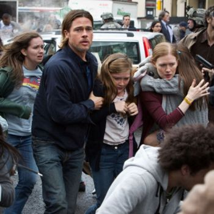
«Война миров Z» (англ. World War Z) — постапокалиптический боевик по роману Макса Брукса «Мировая война Z». Режиссёр фильма — Марк Форстер, в главной роли (а также и продюсер фильма) — Брэд Питт.
20 июня 2013 года он был показан как фильм открытия 35-го Московского международного кинофестиваля.
Рейтинг MPAA — PG-13, в России — 12+. Существует также расширенная (unrated) версия фильма, где добавлено много небольших, иногда жестоких кадров с заражёнными.
Название фильма и книги в оригинале World War Z. Первая и вторая мировые войны по-английски называются World War I и World War II соответственно. Таким образом, с одной стороны, последняя буква английского алфавита Z в названии фильма может означать и «самая последняя мировая война» и указывать на причину событий фильма — zombie. В русском переводе эти аллюзии утеряны, и появляется ложная отсылка на произведение Герберта Уэллса «Война миров». Более удачным вариантом русского названия могло бы быть «Мировая война 3», где 3 — и цифра 3, и буква з.
На данный момент является самым крупнобюджетным фильмом про зомби, как по стоимости съемок (около 190 млн $), так и по выручке от проката (540 млн $).
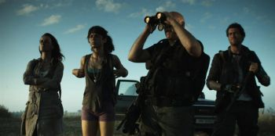
Movie: Another World
Storyline: In a post-apocalyptic future, a biological warfare program gone wrong leaves only four survivors defending themselves from "the infected" - mindless killers. As they struggle to survive and make sense of what is happening, they find another survivor, intent on revealing the truth.
Actor: Larry Butchins, Zach Cohen, Susanne Gschwendtner
Director: Eitan Reuven
Country: Israel
Duration: 99 min
Movie: Chrysalis
Storyline: Joshua and Penelope are survivors of a deadly infection that laid waste to humanity 25 years ago. When they encounter fellow survivor Abira, their lives are forever changed as they fight off the remnants of the infected.
Genres: Drama, Horror, Sci-Fi
Actor: Sara Gorsky, Cole Simon, Tanya Thai McBride
Director: John Klein
Duration: 100 min
Release: 24 April 2014
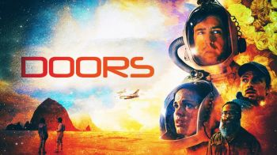
Movie: Doors
Storyline: Without warning, millions of mysterious alien "doors" suddenly appear around the globe. In a rush to determine the reason for their arrival, mankind must work together to understand the purpose of these cosmic anomalies. Bizarre incidences occurring around the sentient doors leads humanity to question their own existence and an altered reality as they attempt to enter them.
Actor: Kathy Khanh, Julianne Collins, Aric Floyd
Director: Saman Kesh, Jeff Desom
Duration: 81 min
Release: 23 March 2021 (USA)
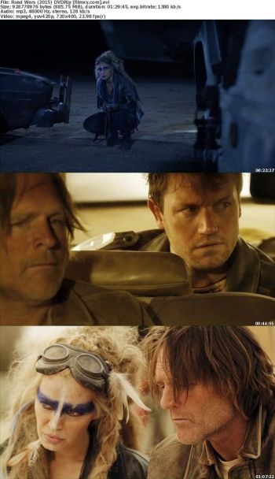
Movie: Road Wars
Storyline: When an amnesiac wakes up in a post apocalyptic world ravaged by a rabies type virus, he must band together with a small group of survivors.
Genres: Action, Sci-Fi
Actor: Chloe Farnworth, Cole Parker, John Freeman
Director: Mark Atkins
Duration: 90 min
Release: 5 May 2015 (USA)
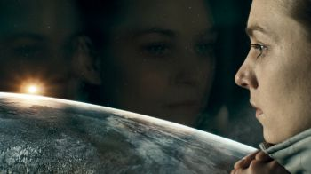
«Груз» (англ. Cargo) — научно-фантастический фильм 2009 года режиссёра Ивана Энглера.
Эпидемия (исп. Los Últimos Días — Последние дни) — испанский фильм 2013 года Алекса и Давида Пасторов. Премьера состоялась в марте 2013 года.
Movie: Pandorica
Storyline: Pandorica revolves around the leadership trials of The Varosha Tribe. Eiren, Ares and Thade are all in line to lead the next generation of their people. Only one of them will become leader but who will it be? Pandorica is an edge of your seat action horror that keeps the twists coming thick and fast.
Actor: Jade Hobday, Marc Zammit, Adam Bond
Director: Tom Paton
Country: UK
Duration: 82 min
Release: 1 April 2016 (UK)
Movie: The Outer Wild
Storyline: After an unnatural event leaves mankind nearly extinct, a runaway girl and a rogue bounty hunter brave a dangerous wilderness to find a fabled sanctuary that can either save or destroy what's left of humanity.
Genres: Action, Adventure, Horror
Actor: Lauren McKnight, Christian Oliver, Jeffrey Vincent Parise
Director: Philip Chidel
Duration: 85 min
Release: 28 September 2018 (USA)
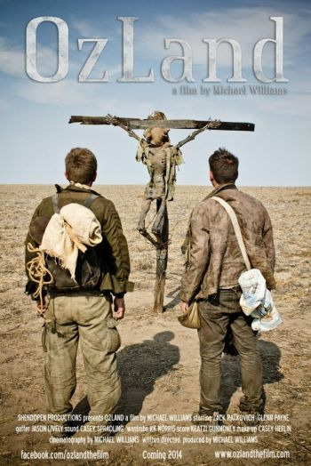
«Страна Оз» (англ. OzLand) — независимый американский художественный постапокалиптический фильм-драма 2014 года, в сюжете которого ключевую роль играет книга Л. Фрэнка Баума «Удивительный волшебник из страны Оз». Фильм стал полнометражным режиссёрским дебютом Майкла Уильямса, который спродюсировал и поставил его, а также выступил в роли сценариста и оператора.
Фильм был показан на ряде кинофестивалей, где завоевал несколько наград. Выход в прокат состоялся в США осенью 2015 года, при этом окончательная версия фильма была сокращена на 10 минут.
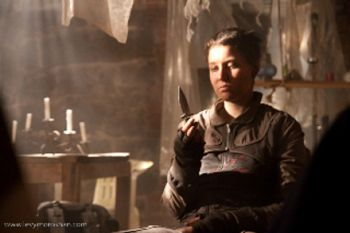
Population: 2 is a 2012 American film directed by Gil Luna. The film was made entirely in Oregon with an all-Oregon cast and crew. It is recognized as having utilized several historic sites, one of which, the Fairview Training Center, no longer exists in its full form, having been deconstructed starting in 2011.
Plot:
Set against the backdrop of a post-apocalyptic Earth, Population 2 is about Lilith who wanders the remains of civilization every day, scavenging what she can from the deserted refuse of what was once a bustling city.
Cast:
• Jon Ashley Hall as Simon Prime
• Shelly Lipkin as Vincent Velo
• Sibyl Lazzara as Kennedy
• Jacqueline Gault as Doctor Bannon
• Meredith Adelaide as Face of Pandora (as Meredith Williams)
Containment is a 2015 British thriller film written by David Lemon, directed by Neil Mcenery-West, produced by Casey Herbert, Pete Smyth and Christine Hartland; and starring Lee Ross, Sheila Reid, Louise Brealey, Pippa Nixon, Andrew Leung, William Postlethwaite and Gabriel Senior. The film's executive producer is Simon Sole.
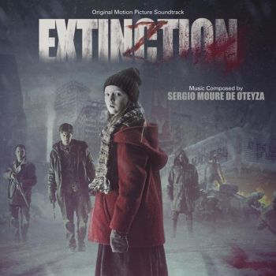
«Добро пожаловать в Гармонию» (англ. Welcome to Harmony), также известен как «Вымирание» (англ. Extinction) — постапокалиптический фильм 2015 года испанского режиссёра Мигеля Виваса. В главных ролях снимались Джеффри Донован, Мэттью Фокс и Куинн Макколган. Одним из продюсеров выступил режиссёр Хауме Кольет-Серра.
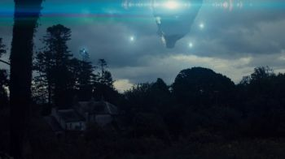
The Quiet Hour is a British science fiction film written and directed by Stéphanie Joalland and produced by Sean Anthony McConville. It stars Dakota Blue Richards, Karl Davies, Jack McMullen, and Brigitte Millar. Humans are few and far between since Earth was invaded by unseen extraterrestrial machines that harvest the planet's natural resources and relentlessly kill its inhabitants. In a remote part of the countryside, where starved humans have become as dangerous as the alien machines hovering in the sky, a feisty 19-year-old girl, Sarah Connolly, sets out on a desperate attempt to fight back a group of bandits and defend her parents' farm, their remaining livestock, and the solar panels that keep them safe from extraterrestrials. If she doesn't succeed, she will lose her only source of food and shelter; but if she resists, she and her helpless blind sibling will be killed. And if the mysterious intruder dressed like a soldier who claims he can help them turns out to be a liar, then the enemy may already be in the house.
The film was shot in County Tipperary in Ireland and made its world premiere in July 2014 at the 26th Galway Film Fleadh. It was nominated for Best UK Feature at the 22nd Raindance Film Festival, where it made its UK premiere on 3 October 2014.
The film was produced by Frenzy Films and distributed by Vision Films.